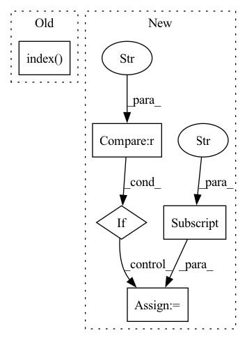

Pattern ID :8130
Before Change
weight (torch.tensor): Weight corresponding to the given regressor
reg_index = self.regressor_names.index( name)
weight = self.regressor_params[reg_index]
return weight
def _piecewise_linear_trend(self, t):After Change
if mode == "additive":
regressor_params = self.regressor_params["additive"]
if mode == "multiplicative" :
regressor_params = self.regressor_params["multiplicative"]
return regressor_params[index].weight
def _piecewise_linear_trend(self, t):In pattern: SUPERPATTERN
Frequency: 3
Non-data size: 5
Instances Fragment ID: 28753878
Project Name: ourownstory/neural_prophet
Commit Name: 71ff07c9baa8002f2611b7f6d3f8f94825e59b1b
Time: 2020-09-14
Author: hansika.hewamalage@monash.edu
File Name: neuralprophet/time_net.py
M Class Name: TimeNet
N Class Name: TimeNet
M Method Name: get_reg_weights(2)
N Method Name: get_reg_weights(2)
M Parent Class: nn.Module
N Parent Class: nn.Module
M File Name: neuralprophet/time_net.py
N File Name: neuralprophet/time_net.py
M Start Line: 237
M End Line: 239
N Start Line: 246
N End Line: 255
Before Change
con_input = enc_outputs[0]
else:
// use the output of the decoder its output was not None
con_input = enc_outputs[1-enc_outputs.index( None) ]
con_outputs, con_context_outputs = self.context_module(con_input)
// forward decoder(s)After Change
rgbd = torch.cat([rgb, depth], dim=1)
enc_inputs["rgbd"] = rgbd
else:
if "rgb" in self.args.input_modalities :
enc_inputs["rgb"] = batch["rgb"]
if "depth" in self.args.input_modalities:
enc_inputs["depth"] = batch["depth"]
// forward (fused) encoder(s)
enc_outputs, enc_dec_skips = self.encoder(enc_inputs) Fragment ID: 28753879
Project Name: tui-nicr/emsanet
Commit Name: c27ed2c1ec4b9dc6eb862cee7f582e2396f8d5a5
Time: 2023-03-29
Author: daniel.seichter@tu-ilmenau.de
File Name: emsanet/model.py
M Class Name: EMSANet
N Class Name: EMSANet
M Method Name: forward(3)
N Method Name: forward(3)
M Parent Class: torch.nn.Module
N Parent Class: torch.nn.Module
M File Name: emsanet/model.py
N File Name: emsanet/model.py
M Start Line: 170
M End Line: 191
N Start Line: 194
N End Line: 224
Before Change
if "regressors" in inputs:
components["regressors"] = self.regressor_effects(features=inputs["regressors"])
for reg in self.regressor_names:
index = self.regressor_names.index( reg)
feature = inputs["regressors"][:, :, index]
feature = feature.unsqueeze(-1)
components["regressor_{}".format(reg)] = self.regressor_effects(features=feature)
return componentsAfter Change
mode = configs["mode"]
index = []
index.append(configs["regressor_index"])
if mode == "additive" :
features = inputs["regressors"]["additive"]
params = self.regressor_params["additive"]
else:
features = inputs["regressors"]["multiplicative"]
params = self.regressor_params["multiplicative"]
components["regressor_{}".format(regressor)] = self.scalar_features_effects(features=features, params=params, indices=index)
return components
Fragment ID: 28753876
Project Name: ourownstory/neural_prophet
Commit Name: 71ff07c9baa8002f2611b7f6d3f8f94825e59b1b
Time: 2020-09-14
Author: hansika.hewamalage@monash.edu
File Name: neuralprophet/time_net.py
M Class Name: TimeNet
N Class Name: TimeNet
M Method Name: compute_components(2)
N Method Name: compute_components(2)
M Parent Class: nn.Module
N Parent Class: nn.Module
M File Name: neuralprophet/time_net.py
N File Name: neuralprophet/time_net.py
M Start Line: 482
M End Line: 516
N Start Line: 493
N End Line: 539